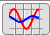
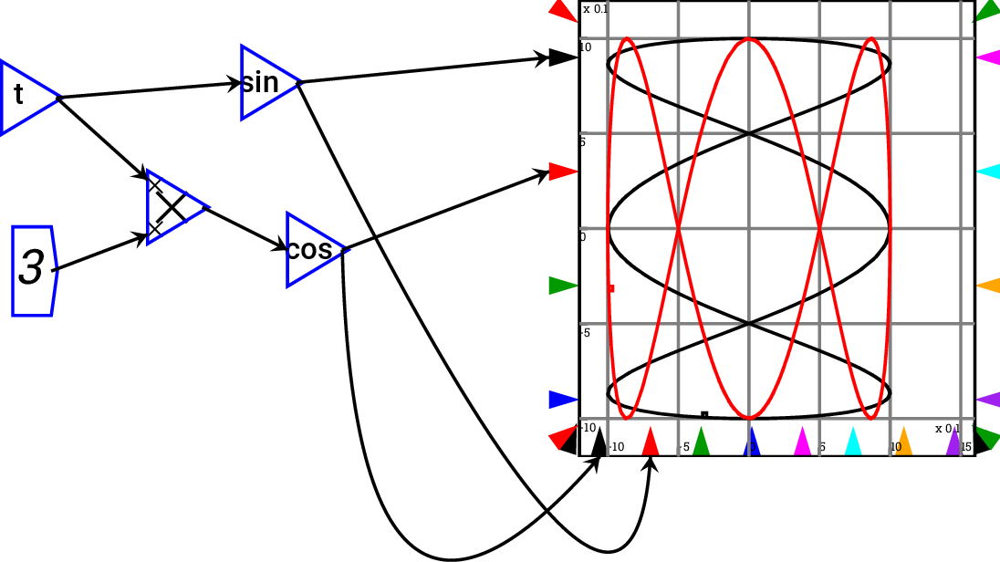
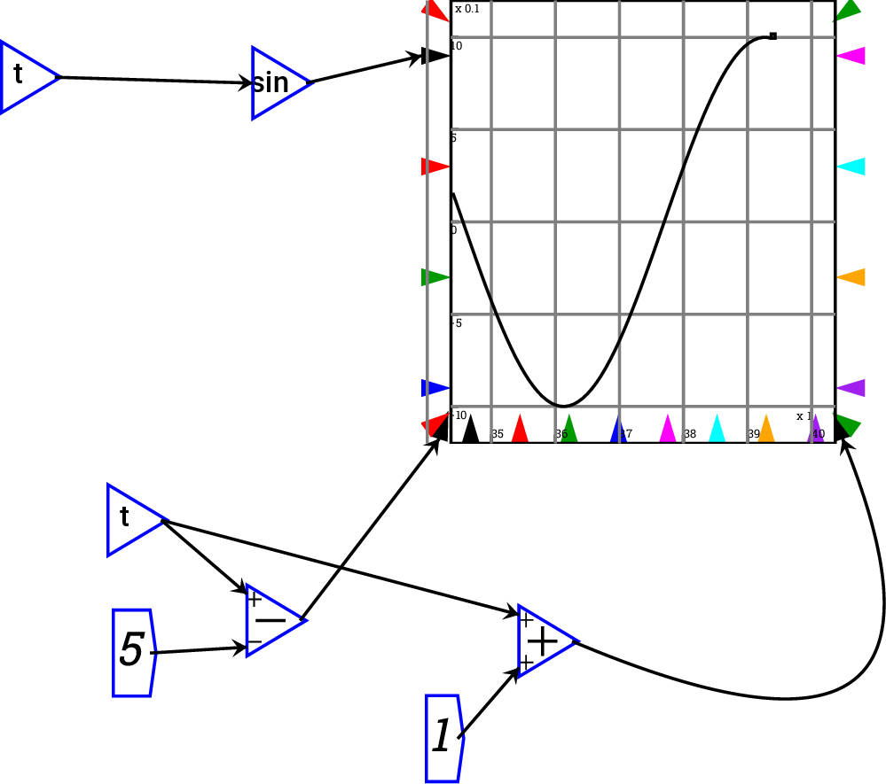
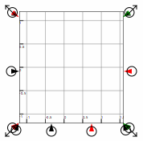

Next: Plot context menu
Up: Reference
Previous: Groups
Contents

The plot widget embeds a plot into the canvas.
Around the outside of the plot are a number of input ports that can
be wired:
- left hand edge Multiple series can be plotted by attaching them as
inputs to the black input triangle on the middle of the Y1 axis.
- right hand edge Multiple series can be plotted by attaching them
as inputs to the red input triangle on the middle of the Y2 axis.
These are shown on a different scale to the left hand Y1 inputs, which
allows very different magnitudes to be compared on the one plot.
- bottom edge The default for the X-axis is either time—for a Minsky
simulation model—or the right-pointing axis of a Ravel. XY plots
can be created by attaching an input to the matching input on the
X axis: the input to the black triangle will be plotted against the
variable(s) inputted on the black Y1 input port; and the input to
the red triangle will be plotted against the variable(s) inputted
on the red Y2 input port.

If only one bottom port is connected, then that controls all pens
simultaneously, and if no ports are connected, then the simulation
time is used to provide the  coordinates
coordinates
- corners Corner ports control the scale. You can wire up variables
controlling minimum and maximum of the ,
 and right hand
axes. If left unwired, the scales are determined automatically from
the data—or set by fields in the Options form. Corner ports can
also be used to, for example, implement a sliding window graph—so
that the scale of the graph adapts to the simulation in a Minsky
model.
and right hand
axes. If left unwired, the scales are determined automatically from
the data—or set by fields in the Options form. Corner ports can
also be used to, for example, implement a sliding window graph—so
that the scale of the graph adapts to the simulation in a Minsky
model.

Plots can be resized using the resize arrows that appear when the
mouse hovers over a plot. Click on one of these arrows and drag the
mouse and the plot will be resized.

Subsections
Next: Plot context menu
Up: Reference
Previous: Groups
Contents